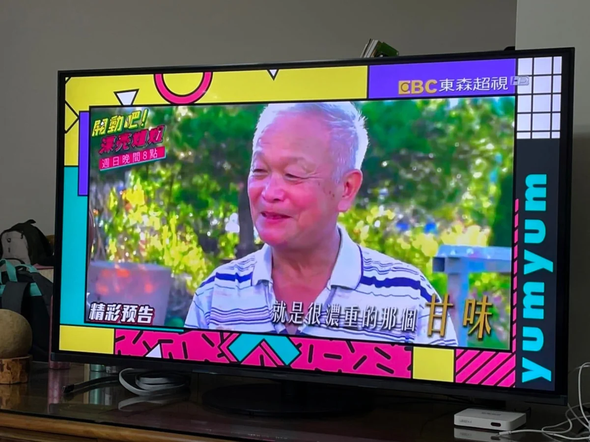
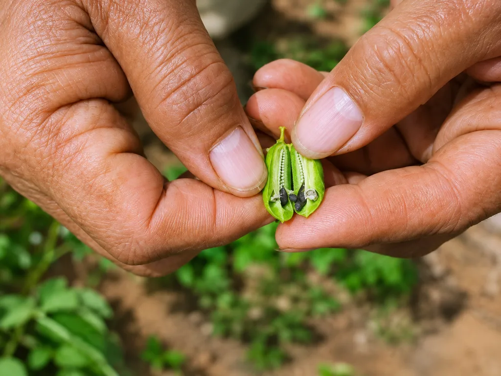

條仔脯
整條蘿蔔手選、鹽醃、反覆翻曬，適合煮湯與泡茶。


媒體報導

臺中市政府客家事務委員會｜《聽・看臺中客》第五期・2022
從客家飲食的角度，看一戶清水農家怎麼把手藝傳下來。對我們來說，傳家的是做菜脯的工夫，也是家人一起顧著一方曬埕的日子。
閱讀《聽・看臺中客》原刊（PDF）

臺中市政府｜《臺中好生活》2018 年 12 月號
菜脯常在家常菜裡當配角。這篇報導從餐桌上的一口菜脯，回頭看看清水農家為這份滋味做了哪些工夫。
閱讀《臺中好生活》原刊（PDF）
在地農產

殼薄、仁飽滿，適合鹽炒、做花生糖，也可以榨油。

從採收、翻曬到過篩，留下清水紅土黑芝麻的堅果香。

跟著節氣種植與採收，供應隨季節變化。

以自家的九號花生和黑芝麻榨油，依收成供應。